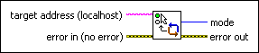
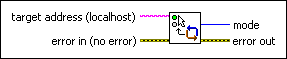

Get Scan Engine Mode VI
Owning Palette: NI Scan Engine VIs
Requires: Base Development System (Real-Time, Windows)
Returns the operating mode of the NI Scan Engine on the target.

 Add to the block diagram Add to the block diagram |
 Find on the palette Find on the palette |
Owning Palette: NI Scan Engine VIs
Requires: Base Development System (Real-Time, Windows)
Returns the operating mode of the NI Scan Engine on the target.

| Add to the block diagram |
Find on the palette |
 |
target address specifies the IP address or DNS name of the target. | ||||||||
 |
error in describes error conditions that occur before this node runs. This input provides standard error in functionality. | ||||||||
 |
mode returns the operating mode of the NI Scan Engine.
|
||||||||
 |
error out contains error information. This output provides standard error out functionality. |